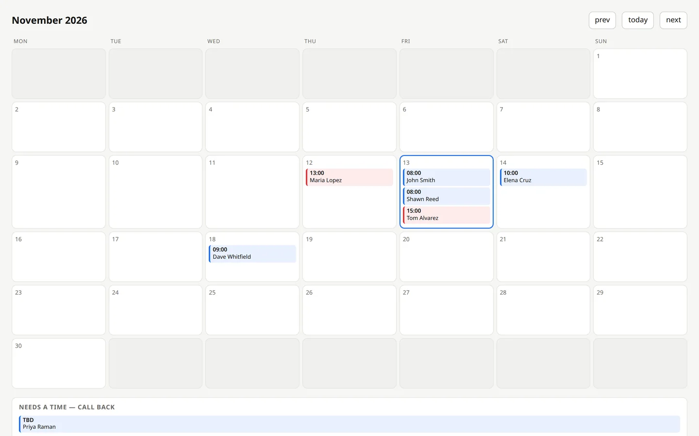

Case study · Phone receptionist
Someone picks up, works out what's wrong, and books the visit.
The line at a heating and air company, answered by a receptionist that runs on the office machine. It asks the questions a good front desk asks, walks a caller through the checks that save a trip, spells the name back before writing it down, and puts the visit on the calendar with a reference the caller can repeat.
- Answers at any hour
- Asks before it books
- Spells the name back
- Writes to the calendar
- Runs on your own machine
- Still being polished

The call nobody answers
A two-person heating and air shop cannot answer the phone while both of them are under a house. The caller who gets voicemail at four in the afternoon dials the next name on the list, and the shop never learns it lost the job.
An answering service fixes the ringing and not much else: it takes a message, and somebody still has to call back that evening, ask the same five questions, and write the visit down. The point of this build is the part after the message — asking, deciding, and putting it on the calendar while the caller is still on the line.
One call, four moves
- Picks upTwo rings of ringback first, then the greeting. Instant pickup reads as a machine, and two rings is what a person at a desk sounds like.
- Works out the problemIt repeats the problem back in a few words, then asks the checks that save a trip: thermostat on heat, breaker, the furnace switch, the filter. If the answer is the filter, there is no visit to book.
- Books itOne question at a time — name, callback number, address, what's wrong, the day and window. The name is spelled back from a tool rather than from memory, and confirmed before anything is written.
- Writes it downA row in the database and an event in the office calendar, plus a reference like A-0012 the caller can repeat. If the calendar is down the booking still saves.
What it does when it mishears
This is the interesting part of the build, and the reason the log matters more than the demo. A phone line is a bad microphone: names, numbers and street names arrive wrong. Below is one test call, cut down, taken from the server log. The lines are verbatim.
- Caller — Sean Reed.
- Receptionist — Sean Reed — that's S-E-A-N, R-E-E-D.
- Receptionist — Did I get that right?
- Caller — Now that's H, H, A, W, N.
- Receptionist — Let me try that again.
- Receptionist — Sean Reed — S-E-A-N, R-E-E-D.
- Receptionist — Is that right?
- Caller — to the correct.
- Receptionist — My apologies, let me get that right.
- Receptionist — Is it S-H-A-W-N, R-E-E-D?
- Caller — Yes.
- Receptionist — Thanks, Shawn.
Look at the fourth line: the caller is spelling the name and the recogniser has already lost it, one letter dropped and another doubled. The agent is reading a word that is no longer the name. Three rounds for one name, and it never guessed. That is the behaviour I wanted, and it took work to get: the letters come from a tool, not from the model, and the booking is blocked until the caller says yes.
What it won't do
| Ask it for | What happens |
|---|---|
| A price, an arrival time, a technician's name | Says someone will confirm, and takes the number |
| A gas smell or a carbon monoxide alarm | Tells the caller to leave the house and call 911 first, then takes the details and marks it urgent |
| Medical, legal or financial advice | Declines, and takes a message |
| To be booked twice | Returns the first reference instead of a second booking |
| A person, right now | Takes the number and says the office will call back within the hour, without more questions |
| Anything, when the booking fails | Takes name and number, gives the reference if there is one, and promises the same day — never a time it cannot keep |
Every one of these is a line in the persona, not a hope. The persona is one markdown file: who answers, how they talk, what they handle, and the hard limits. Changing the trade means changing that file and the tool it books with.
Still being built
This one is not handed over to a client yet, so here is what is not finished. The company on this page is a stand-in of my own, and every caller and booking in it is test data.
- One model, one failureA fallback model took 26 to 38 seconds to start speaking and was removed. There is one model behind this now, and a stall is retried once before the caller is told anything.
- It does not say it is a machineOn a real client's line I would have it say so in the first sentence and offer a person. That is the business owner's call, but it should be the default, and it is not built yet.
- Bad linesThe log above shows the good case. The same call with wind and traffic on the line produced “(speaking in foreign language)” and “(birds chirping)” where the caller's sentence should be.
- One phone system testedTwo carriers and a local phone exchange are wired up, but it has only ever run against my own test calls, never a real switchboard with hold music, transfers and extensions.
Under the hood
For the technical reader. A Python service with three local parts and one model call, all on the office machine. The speech recognition and the voice are open models running on the CPU, so no audio leaves the building and there is no per-minute speech bill.
- The callA phone exchange takes the line and hands the audio to the service over a socket, 8 kHz in both directions.
- The earwhisper.cpp turns each finished sentence into text, in about a second.
- The replyA model gets the persona, the call so far, and the tools it may call — book, spell a name, look up the calendar — and answers in one or two sentences.
- The voicePiper speaks the reply back, on the same machine. It is fast enough to run while the sentence is still being written.
What broke, and the fix
- It hung up after two secondsThe phone exchange drops a call with no traffic in either direction. The service now sends 20 ms of silence whenever it has been quiet for 400 ms, so a slow answer no longer kills the line.
- It repeated itselfThe model called the booking tool twice for the same caller. A repeated identical call is now answered from a local record, and the booking endpoint returns the first reference for the same name, number and slot within 15 minutes.
- It spelled from memoryNames came out wrong, and a wrong name sends a report to the wrong customer. The letters now come from a local tool, and the persona will not book until the caller confirms them.
- The reference was guessableThe booking endpoint is reachable from the public side of the tunnel, so a loopback check would have exposed every caller's details. It needs a token instead.
Want the phone answered?
Tell me the trade, the five questions your front desk always asks, and where a booking has to land.
Fixed scope, fixed price, quoted before I start. You own the code, and I reply within one working day.